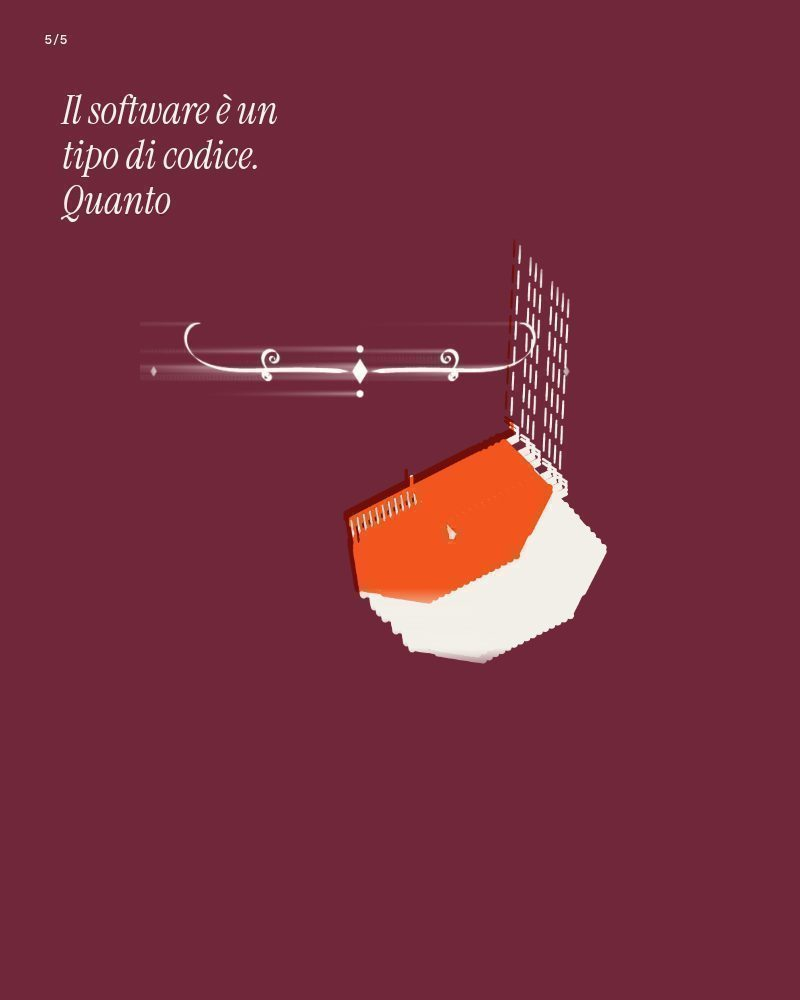

Giorno 194

5/5 · Il software è un tipo di codice. Quanto
ho letto "Software"; "volta" non so cosa sia; mi sta vicino a solito, nero, nome, marco; ricerca "volta" (approfondire): Cosa resta di volta se tolgo le parole?; esercizio di varietà: mai fatto prima: materiale nuovo, composizione nuova